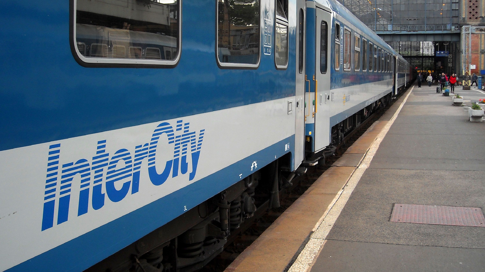
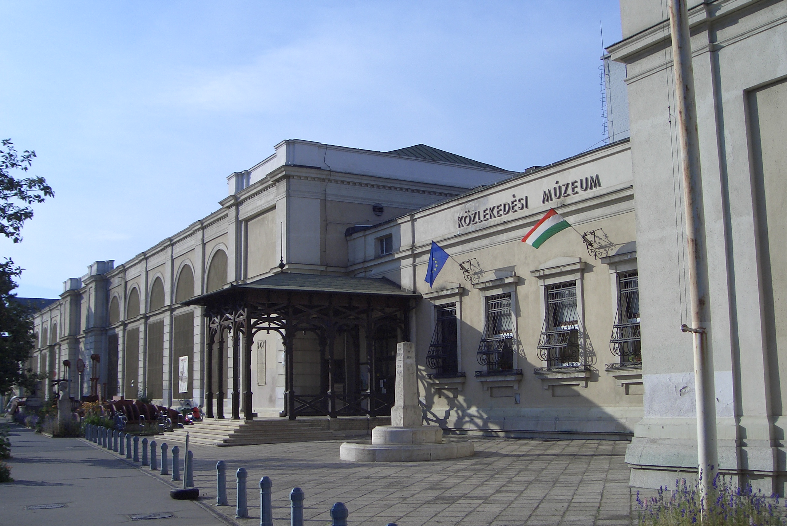
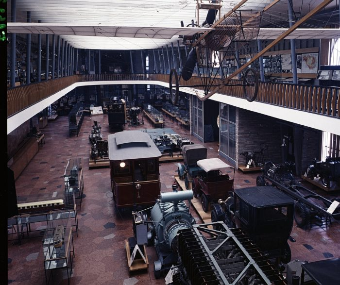
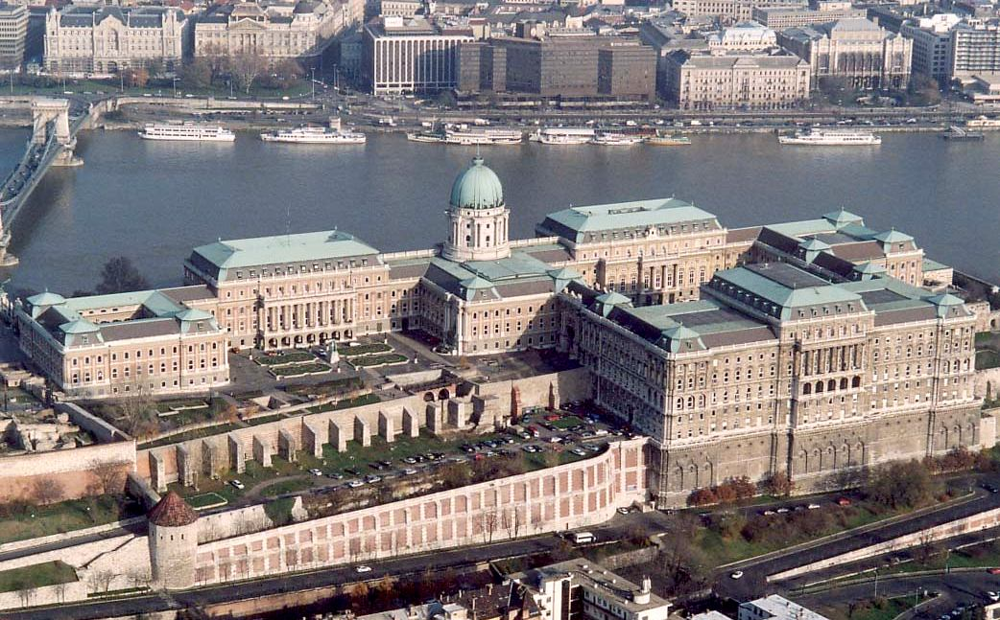

Miután vonattal megérkeztünk Budapestre, első látnivalónk a Közlekedési Múzeum lesz.
A Közlekedési Múzeum a Városligetben található, közlekedési eszközök vannak itt kiállítva. A közlekedés történetével ismerkedhetünk meg.
Nyomon követhetjük a járműtechnika fejlődését.
Délutáni programunk a Budai Várnegyed lesz.
Itt meg tudjuk látogatni a Budavári Palotát, a Halászbástyát, a Várkert Bazárt és a Mátyás-templomot.
Ez igazán tartalmas részlete lesz a Budapesti kirándulásunknak.
Este felé egy kicsit szabadabb, laza városnézés lesz.
Másnap délelőtt ellátogatunk a Parlament épületébe egy körbejáró túra keretében.
A Parlamentben ülésezik a Magyar Országgyűlés, nagyon érdekes lesz azt az üléstermet a valóságban is látni, amit a TV-ben már sokszor láthattunk.
A Parlamentben vannak kiállítva a koronázási ékszerek 2000 óta.
Miután megebédeltünk egy közeli éttremben, kora délután még elmegyünk megnézni a Hősök terét.
A Hősök tere állami ünnepségek helyszíne is szokott lenni.
A Hősök tere szomszédságában található a Szépművészeti Múzeum és a Műcsarnok.
A Hősök terétől fél óra gyaloglásra van a Nyugati Pályaudvar.
Úgy döntöttünk, hogy ezt a távot gyalog tesszük meg, mert a vonat indulásáig még bőven van annyi időnk és még a vacsora megvásárlása is belefér.
Mindezek után pedig már hazafele vesszük az irányt, és ezzel véget ér a kirándulás.
   